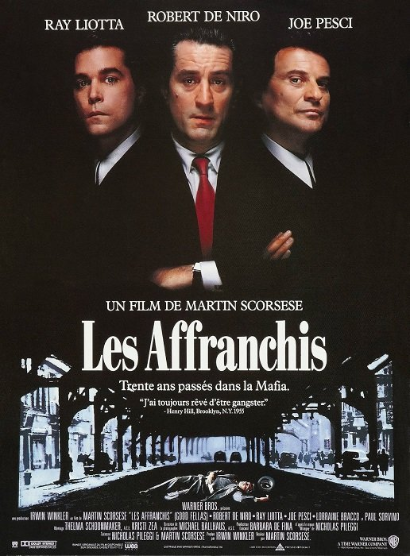
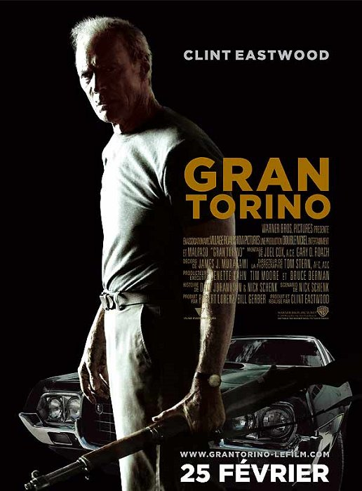

Programmation du festival
Films
Août 2017
Chaque soir, deux films seront présentés à 18h et 21h
Un "après film" d'une heure pour chaque séance vous permettera de débattre de la projection, de vous rafraichir ou simplement de vous degourdir les jambes dans la fraicheur du parc.
Avertissement aux visiteurs
Bien que certains films soient puissent être un peu dur pour de jeunes enfants, tous sont tout publics et adaptés au cadre ouvert du festival.
L'accès aux films est gratuit et ouvert à tous, n'hésitez cependant pas à cliquer sur les boutons des films que vous pensez aller voir pour aider notre équipe à gérer au mieux le nombre de personnes par soir.
Inscrivez vous en 30 secondes

S'inscrire n'est pas obligatoire mais vous nous aideriez beaucoup à estimer le nombre de personnes présentes et donc votre bon accueil.


Le mardi 6 août

La tête en friche - 18h

Les Affranchis - 21h
Le mercredi 7 août
Le Coeur des Hommes - 18h
Persepolis - 21h
Le jeudi 8 août
La guerre est déclarée - 18h
